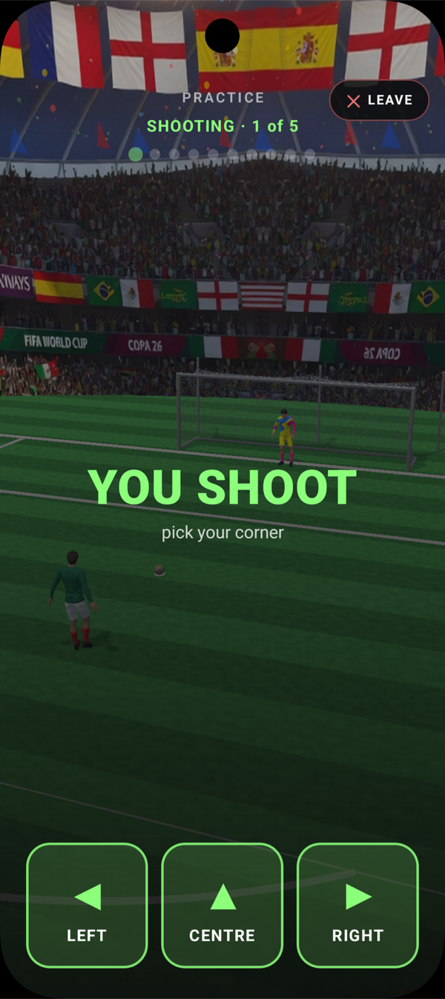

Zero-knowledge apps that prove on the phone — no server, no seed phrase.¶
Kuira is the Android SDK for Midnight: on-device ZK proving, passkey identity, an embedded wallet, and the Compact runtime — the full private-app stack, self-custodial. Built to pair with your coding agent: every recipe ships a one-tap prompt.
Try it now — clone a working dApp¶
The fastest way in: a complete, runnable app you make your own. Copy the prompt into your coding agent — it clones the repo and walks the setup as a task list you can watch.

Starter
Kuira Starter¶
A minimal counter dApp — Sigil identity, embedded wallet, and a 6-line Compact contract you deploy and increment on-chain. ~700 lines, also a GitHub template.

Example
Midnight Kicks¶
A ZK penalty shootout on Unity 3D and Kotlin, with a Compact contract as the on-chain referee. Commit-reveal so neither side can cheat, and every move is proved on the phone.
Already have an app? Add Kuira with your agent¶
Integrating Kuira into an existing project, or following a specific recipe? Pick a task and your agent — we generate the prompt; you paste it in, and the agent works the steps as a task list.
What do you want to build?
For your agent
Identity
Passkey-derived sigil¶
One biometric mints a DID + wallet seed. PRF on the passkey assertion — no seed phrases at onboarding, recoverable on any device that shares the Google account.
Wallet
Embedded, no custodian¶
Shielded + unshielded balance, transaction balancing, indexer sync, Dust regeneration. The wallet lives in your app's process; you never call out to a separate wallet.
Contracts
Compact runtime + ZK proving¶
Deploy and call Compact circuits on-device. QuickJS contract runtime, witness packing, per-circuit proving keys, transaction submission — wired by a Gradle plugin.
dapp-ui, get the graphInstall¶
// settings.gradle.kts
dependencyResolutionManagement {
repositories {
mavenCentral()
}
}
// app/build.gradle.kts
dependencies {
implementation("io.github.kuiralabs:dapp-ui:0.1.0-alpha05")
}
// settings.gradle
dependencyResolutionManagement {
repositories {
mavenCentral()
}
}
// app/build.gradle
dependencies {
implementation 'io.github.kuiralabs:dapp-ui:0.1.0-alpha05'
}
dapp-ui api-exposes the consumer surface, so a single line gives you
the complete SDK graph — drop in the prebuilt wallet + sigil pills, or
build your own UI on the same public contracts. Need no Compose at all?
Use midnight-sdk. → Choose your level
Full integration guide → Security & verification
Working examples — four dApps you can clone and run: see them all →.
Built for AI-assisted development¶
The cookbook is the source of truth for both humans and agents. Every
recipe is a raw markdown file at a stable URL — agents fetch it
directly. A site-root /llms.txt lists every recipe, per
the emerging llms.txt convention.
For maintainers: the SDK source lives in a private repository. Source jars ship next to every AAR on Maven Central, so you can read, audit, or step into the implementation through any IDE.
Known limitations · 0.1.0-alpha05¶
Honest naming of where the SDK doesn't go yet. None of these block the "identity + wallet + contract call" core path; each will close in a future release.
| Gap | Workaround today | Closes in |
|---|---|---|
No Compact authoring deep-dive on the Kuira side — the SDK consumes compiled .compact artifacts but does not teach the full Compact language. Witnesses, ZK patterns, selective-disclosure idioms, multi-party state — all live in the Midnight project's documentation, not Kuira's. |
Start with the Hello Compact recipe for the minimum-viable counter and the toolchain pin matrix, then follow it to the official Midnight contract examples for everything beyond. | Closed by intent — the Kuira SDK is the runtime; Midnight owns the language. |
| SDK source not browsable on GitHub — the Dokka API reference doesn't link to source. | A -sources.jar ships next to every artifact on Maven Central; Android Studio / IntelliJ auto-attach it, so you can step into the implementation as usual. |
By design — sources travel with the artifacts |
BLS proving params from Midnight's dev S3 bucket — midnight-s3-fileshare-dev-eu-west-1, a supply-chain assumption labeled "dev." |
None — this lives at the protocol-team layer; per-contract proving keys are unaffected (each dApp hosts its own). | When Midnight publishes a production URL |
| Android only — no iOS, no React Native bridge, no JS interop. | If you need cross-platform, build the same surface twice for now. | iOS support is planned |
For security-domain gaps — what the threat model does and doesn't cover (compromised devices, malicious co-process dApps, session-cache theft) — see Security § What Kuira does NOT protect against.
What's coming next — Sigil V2¶
The currently-shipped sigil architecture (Sigil V1) derives the
wallet seed deterministically from a passkey PRF assertion. That gives
a one-tap onboarding story but binds the sigil to a single WebAuthn
rpId — so a user's funds cannot be shared across multiple Kuira
apps that ship under different domains, and recovery is gated on the
same Google account holding the synced passkey.
Sigil V2 keeps the one-tap-onboarding promise but treats the master seed as portable data: PRF becomes an unlock key for a persisted seed envelope rather than the seed itself. Three properties follow:
- Cross-app sigil portability via explicit enrollment. A user installs a second Kuira app, taps "Use my Kuira sigil from [Wallet]," and the existing app hands the seed over a secure biometric-gated AIDL channel. Both apps now share the same wallet, same DID, same on-chain history.
- Cross-device, cross-Google-account recovery. PIN-based recovery via an opaque cloud bucket (Signal SVR2 pattern, no enclave needed); the seed survives device loss and account changes.
- Midnight Passport plug-in path. Versioned envelope codec + storage-tier interface + frozen HKDF signer namespace reserve a clean integration surface for Midnight's protocol-native account abstraction, universal DID, and verifiable-credential layers when Passport's spec is public.
The same primitive is already shipped in production by Dashlane, Bitwarden, 1Password, Signal SVR2, and WhatsApp E2EE backups — five independent systems that converged on the same shape for the same reason.
Sigil V2 is the next architecture for Kuira, not the next alpha. The master-seed lifecycle, tiered storage, and cross-app enrollment come first; cloud-bucket PIN recovery follows.
License¶
Apache License 2.0 — see LICENSE.